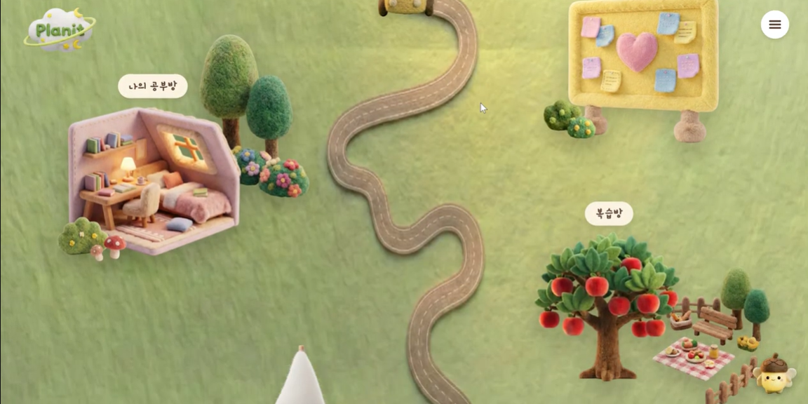
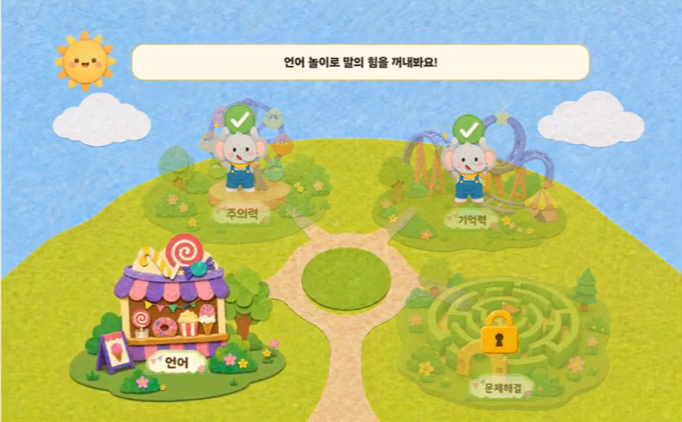
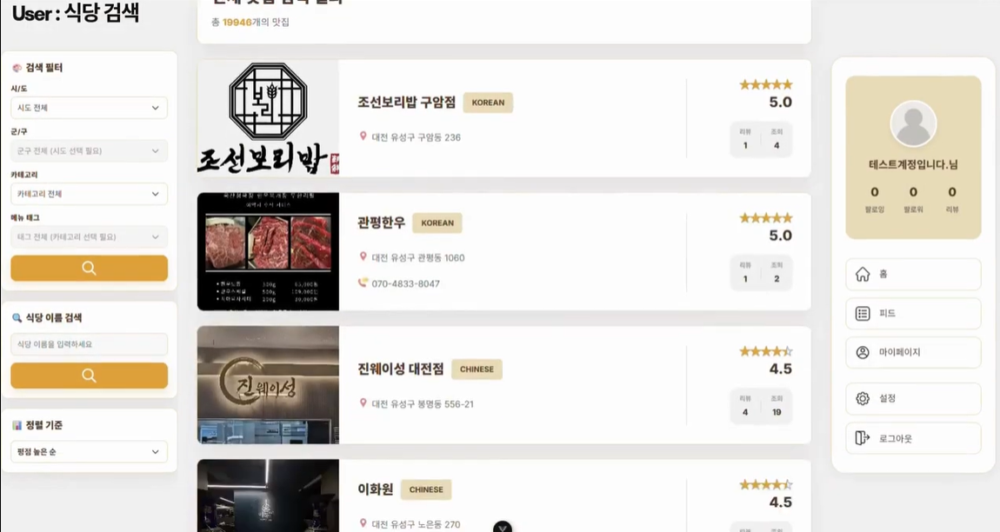
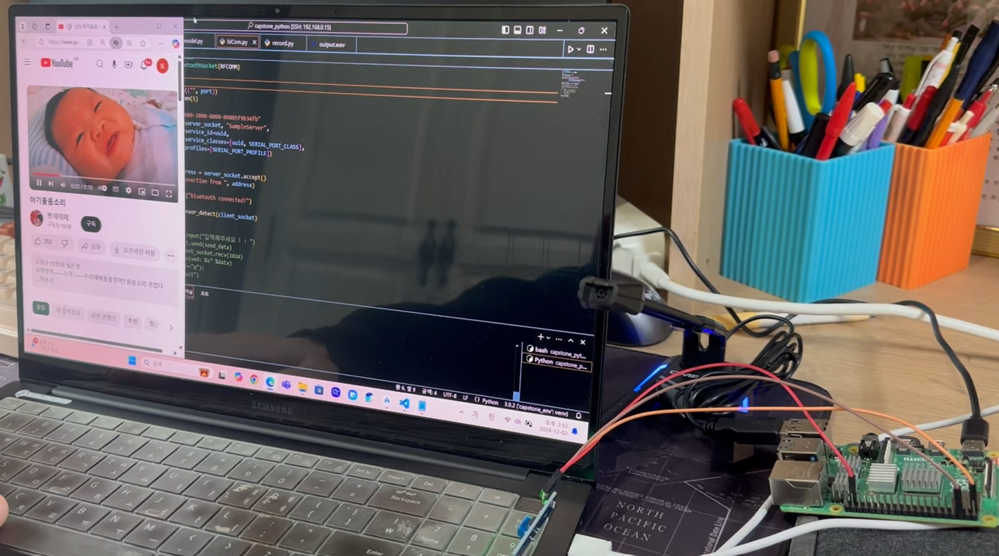
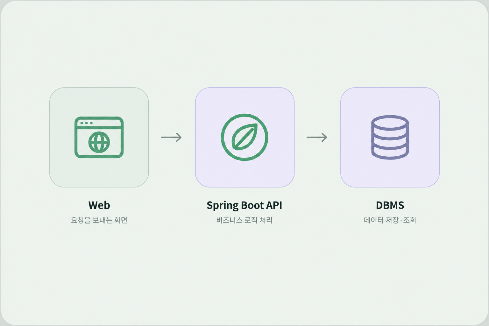
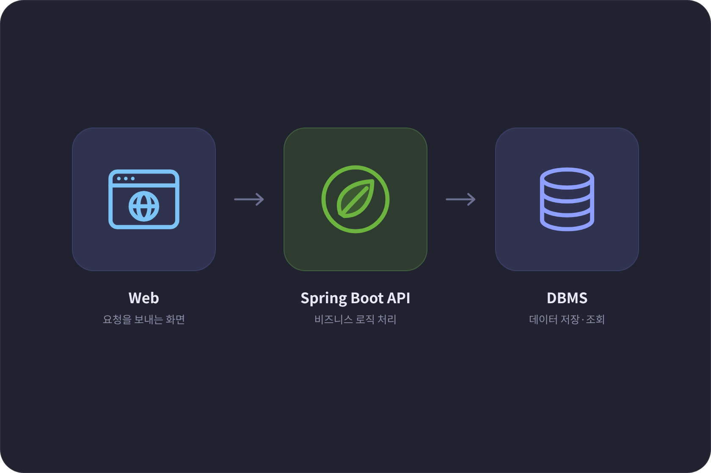
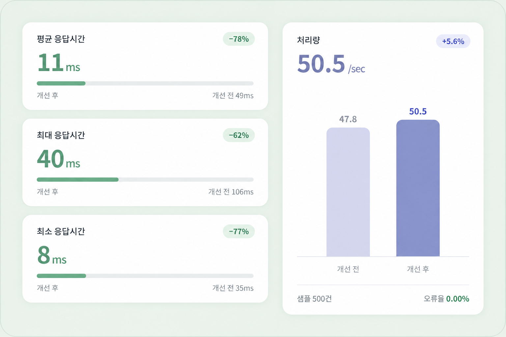
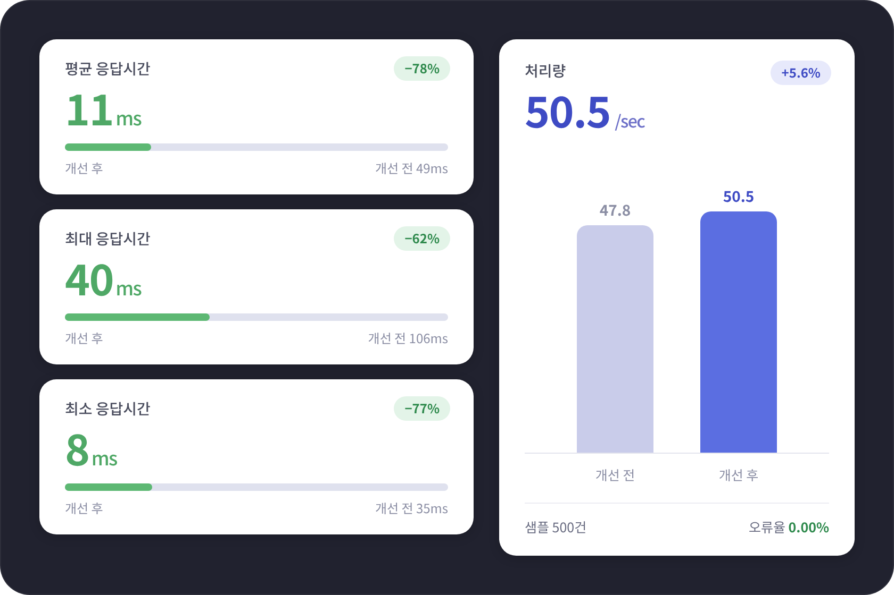
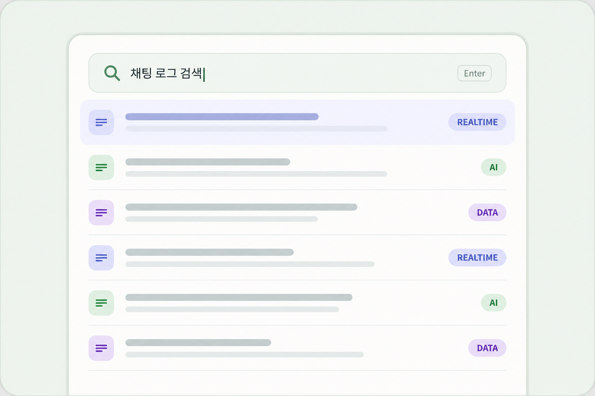
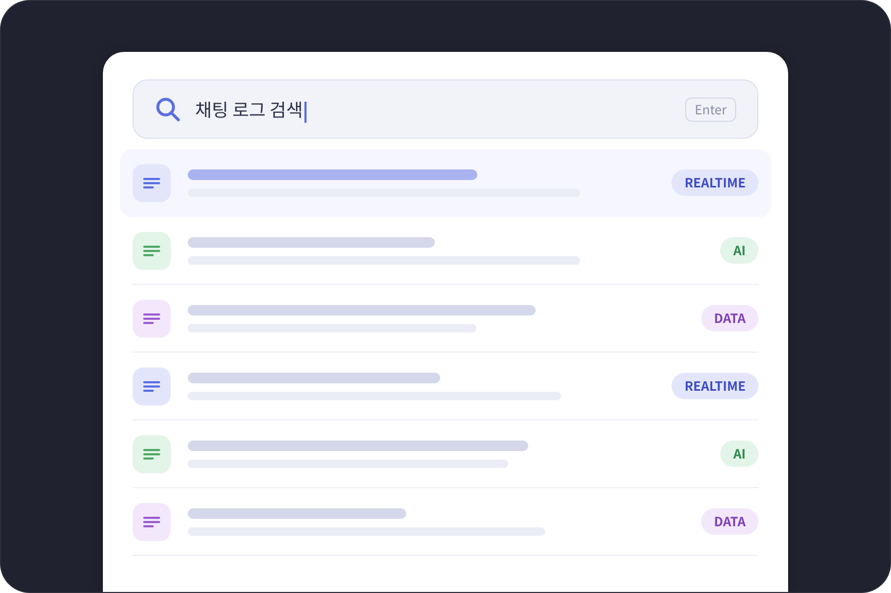

공통 프로젝트 · 01
Planit
실시간 교육봉사 플랫폼
설계와 문제 해결의 기록
실시간 통신, 데이터 최적화, AI 검색으로 풀어낸 네 가지 프로젝트

실시간 교육봉사 플랫폼

아동 인지 훈련 서비스

메뉴 리뷰 기반 SNS 서비스

청각장애 보호자를 위한 아이 울음소리 감지·분류
Backend Development · Performance Optimization · System Integration


기능의 책임과 데이터 관계를 먼저 정리하고 API와 데이터베이스를 설계합니다. 요청·응답 구조를 일관되게 맞추고, 기능이 바뀌어도 흐름을 이해하기 쉬운 코드를 지향합니다.


성능 지표 예시응답 지연과 오류를 처리 단계별로 살펴보고, 조회 쿼리·인덱스·캐시·전송 구조에서 병목을 찾습니다. 문제에 맞는 해결책을 선택하고 개선 전후를 비교해 효과를 확인합니다.


실시간 메시지와 상태 동기화, AI 분석 결과와 데이터 검색을 서비스에 연결합니다. 시스템마다 다른 데이터 형식과 처리 순서를 조율하고, 프론트엔드와 API 구조를 맞춰 갑니다.
IT와 보안을 공부하고,
개발 교육과 팀 프로젝트를 통해
서비스를 만드는 경험을 쌓았습니다.
스마트 IT 보안 전공
IT와 보안을 전공하며 개발자로서의 기반을 다졌습니다.
전공 학습과 함께 개발 교육 과정에 참여하며 학습 경험을 넓혔습니다.
웹 서비스 개발과 팀 프로젝트를 통해 설계·구현·문제 해결 경험을 쌓았습니다.
데이터아키텍처 준전문가
데이터분석 준전문가
SQL 개발자
정보처리기사 자격
함께 해결하고 싶은 문제가 있나요?
새로운 이야기와 연결을 기다립니다.
script.js의 profile 설정에 연락처를 입력하면 링크가 활성화됩니다.